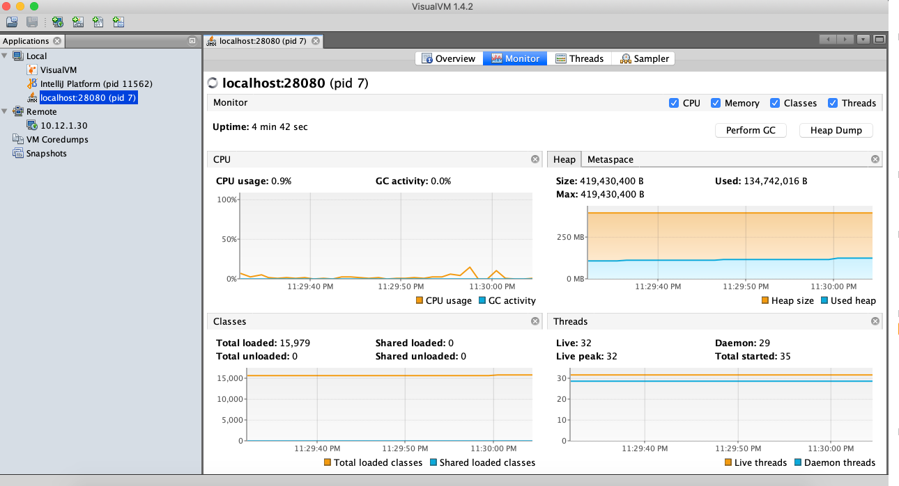
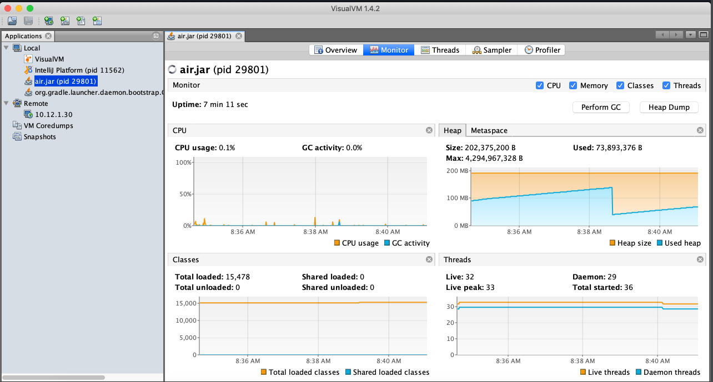
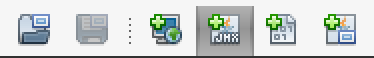
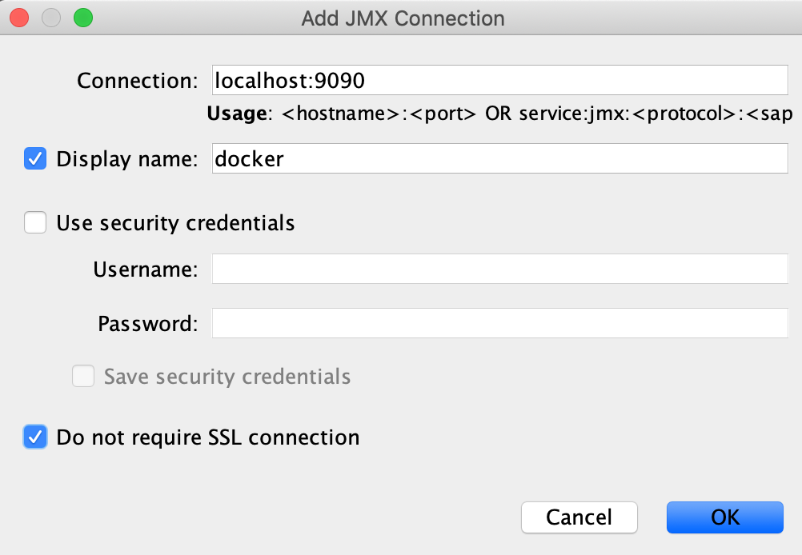
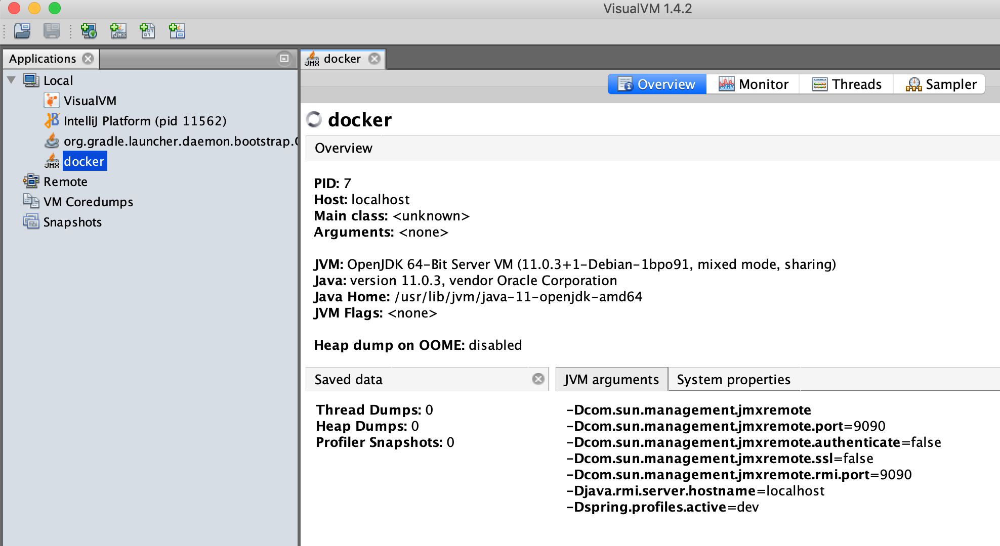
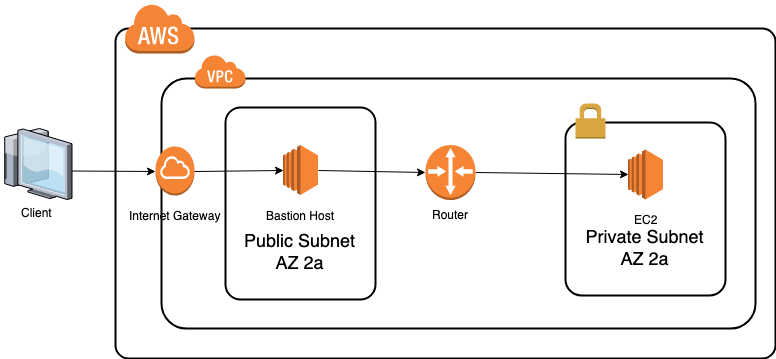
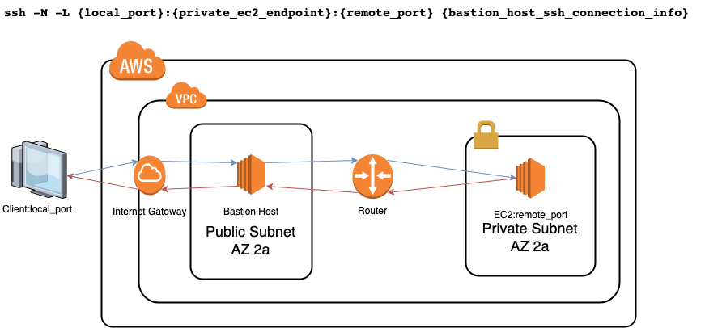
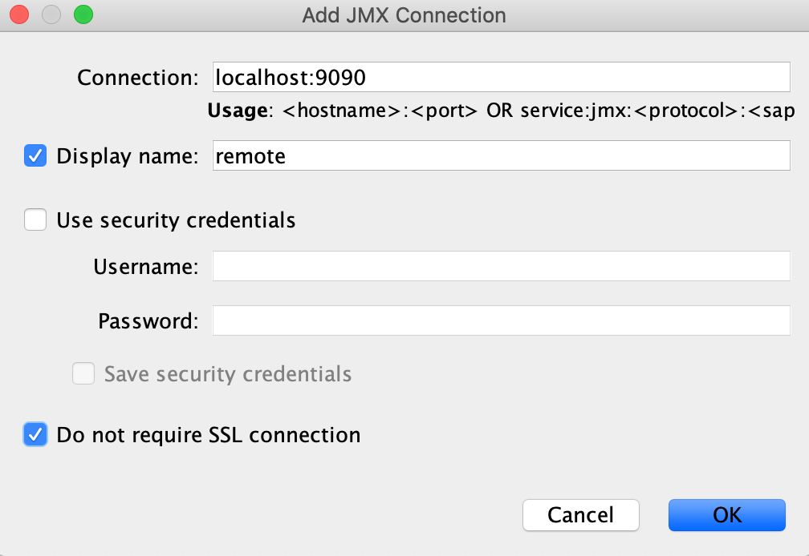
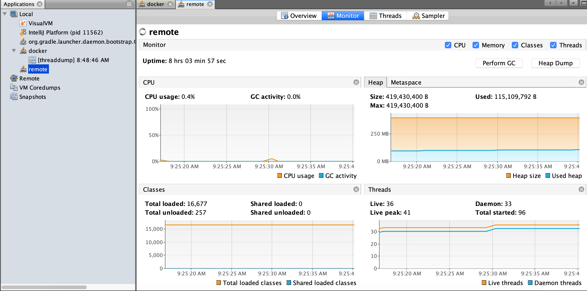

들어가기에 앞서
JMX를 모니터링 하려면 VisualVM이나 JDK에 기본적으로 내장돼있는 JConsole을 사용해야한다.
로컬에서 JMX 모니터링하기
우선 로컬에 어플리케이션을 띄우고 JMX 모니터링하기란 참 쉽다.
우선 자바 어플리케이션을 띄워보자.1
java -jar air.jar

도커 컨테이너 안의 JMX 모니터링 하기
우선 도커 이미지 파일부터 만들어야한다.1
2
3
4
5
6
7
8
9
10
11
12
13
14FROM openjdk:11-jdk-slim
WORKDIR /root
COPY build/libs/air.jar .
CMD (java \
-Dcom.sun.management.jmxremote \
-Dcom.sun.management.jmxremote.port=9090 \
-Dcom.sun.management.jmxremote.authenticate=false \
-Dcom.sun.management.jmxremote.ssl=false \
-Dcom.sun.management.jmxremote.rmi.port=9090 \
-Djava.rmi.server.hostname=localhost \
-jar air.jar)
jmxremote.port와 jmxremote.rmi.port를 달리 해도 되는데 그럼 docker container의 port 2개를 host os port 2개랑 바인딩해야한다.
그냥 둘을 하나로 통일하면 하나만 바인딩하면 되기 때문에 굳이 두 개로 해야할 필요성을 느끼진 못했다.
java.rmi.server.hostname에 로컬의 사설 IP(private ip)를 넣어도 되는데 굳이 귀찮게 그렇게 할 필요성도 느끼지 못했다.
또한 SSH Tunneling을 거치게 됐을 때 서버의 사설 IP를 적었을 때는 접속이 불가능했으므로 무조건 localhost라고 적어주자.
해당 이미지를 빌드하고 이제 이미지를 container로 띄워보자.1
2
3
4
5
6# JMX를 모니터링 하는 것이기 때문에 어플리케이션의 포트는 바인딩하지 않았다.
# JMX remote port(9090)와 다른 포트를 Host OS에 매핑하면 모니터링이 불가능하다.
# 9091:9090 이렇게 하면 못 붙는다 무조건 9090:9090(jmx remote port를 다르게 했다면 해당 포트를...)을 바인딩 해야한다.
# 혹시 jmx remote port와 jmx remote rmi port를 다르게 했다면 두 포트를 모두 바인딩 시켜줘야한다.
# jmx remote port가 9090이고 jmx remote rmi port가 9091이라면 -p 9090:9090 -p 9091:9091 이렇게 해줘야한다.
docker run -p 9090:9090 air
Host OS에 자바 어플리케이션이 뜬 게 아니라 컨테이너 안에서 뜬 거고, HostOS는 JMX remort port만 바인딩 된 거기 때문에 모니터링 툴을 보면 바로 잡혀있지 않다.


만약 jmx remote port와 jmx remote rmi port를 다르게 했더라도 입력하는 포트는 jmx remote port를 입력해줘야한다.

아쉽지만 도커 컨테이너로 띄우게 되면 쓰레드 덤프는 떠지지만 힙 덤프는 안 떠진다.
혹시 도커 컨테이너로 띄웠을 때도 힙 덤프를 뜨게 하려면 어떻게 해야하는지 댓글에 남겨주시면 정말 감사하겠습니다.
SSH Tunneling을 통해 원격지의 JMX 모니터링하기
서버를 퍼블릭 존에 두는 건 매우 위험하다. (크래커가 직접 SSH로 붙을 가능성이 존재하거나 각종 공격에 직접적으로 노출되기 때문에…)
따라서 프라이빗 존에 둬야하는데 VPN을 쓸 경제적 여력이 안 되는 가난한 환경이나 VPN을 적용하지 않은 환경에서는 매우 귀찮아진다.(우리 회사가 가난하다는 게 아니다.)


기본적인 명령어는 위 사진에서 보는 바와 같고 명령어의 예시를 들어보겠다.
1 | # JMX remote port(9090)와 다른 포트를 Localhost에 매핑하면 모니터링이 불가능하다. |
이번에도 역시 Host OS에 자바 어플리케이션이 뜬 게 아니라 원격지의 도커 컨테이너 안에서 뜬 거고, Localhost에는 JMX remort port만 바인딩 된 거기 때문에 모니터링 툴을 보면 바로 잡혀있지 않다.


JMX remote port(9090)와 다른 포트를 매핑하는 바람에 몇 시간을 삽질했는지 모르겠다…
혹시 이거보다 더 간단하게 연결하는 방법이 있다면 댓글로 남겨주시면 정말 감사하겠습니다.